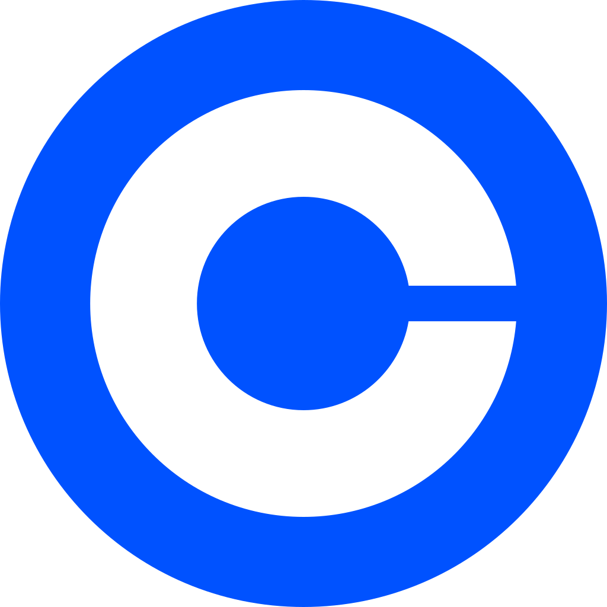
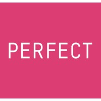

SWE Intern: Ledger
Summer 2022, Remote
I set up a background job system (Faktory) and migrated existing jobs to this system for greater scalability.
I developed and fully implemented a proposal with three goals: write a new job that pulls crypto dust between accounts, create an API endpoint that runs ledger jobs,
and design an easy-to-use UI that calls the endpoint to run the dust pull job.
Technologies used: Go, AWS, Postgres, gRPC

Data Consultant Intern
May 2021 - May 2022, Remote
I took the initiative to identify inefficient tasks and write programs to streamline these errands.
I worked with the technical team to implement my programs into Perfect's content management system.
I oversaw product data and brand accounts in the CMS.
I communicated with business partners like Estee Lauder to maintain product and SKU information.
Technologies used: Python, Excel, CMS